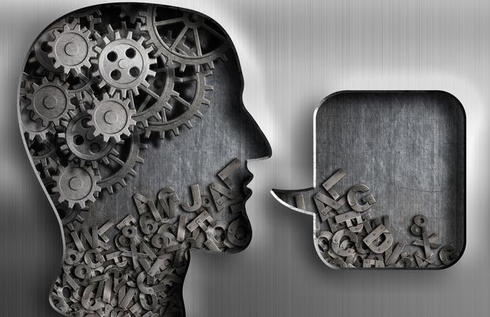

Mon orientation:

Tout d'abord je voudrais aller en première générale en sélectionnant ces 3 spécialités.
Mes trois spécialités:
- Science économique et social
- Langues, littératures et cultures étrangères
- Histoire-géographie, géopolitique et sciences politiques
Je voudrais être psychologue.
Pourquoi faire psychologue ?
Je voudrais devenir psychologue car je veux aider les personnes ayant des difficultés sociales ou se sentant malheureux par exemple,
je veux simplement aider les personnes en difficultées.
Les études nécessaires pour devenir psychologue:
Il faut avoir un bac+5,ainsi avec l'obtension d'une licence et d'un master en psychologie.
Les différents types de psychologue:
- Le psychologue clinicien réalise des bilans psychologiques, de l'aide au diagnostic et des activités de psychothérapie. Il intervient auprès des enfants, à l'hôpital dans les services de psychiatrie ou services spécialisés (gérontologie, pédiatrie…) ; auprès de la justice, pour les expertises, la rééducation des délinquants, la protection judiciaire de la jeunesse.
- Le psychologue social exerce dans des services de ressources humaines pour accompagner les salariés.
- Le psychologue du travail et des organisations ou psychologue de l'entreprise exerce prioritairement en entreprise. Il intervient dans le cadre d'accompagnements courts individuels ou collectifs pour gérer l'amélioration des conditions de travail, les risques psychosociaux, l'accompagnement au changement et/ou restructuration, la gestion du stress et des conflits.
- Le psychologue de la PJJ - protection judiciaire de la jeunesse est un fonctionnaire à l'écoute de la condition psychique des mineurs et des jeunes majeurs.
- Le psychologue cognitiviste est spécialisé dans la compréhension du comportement.